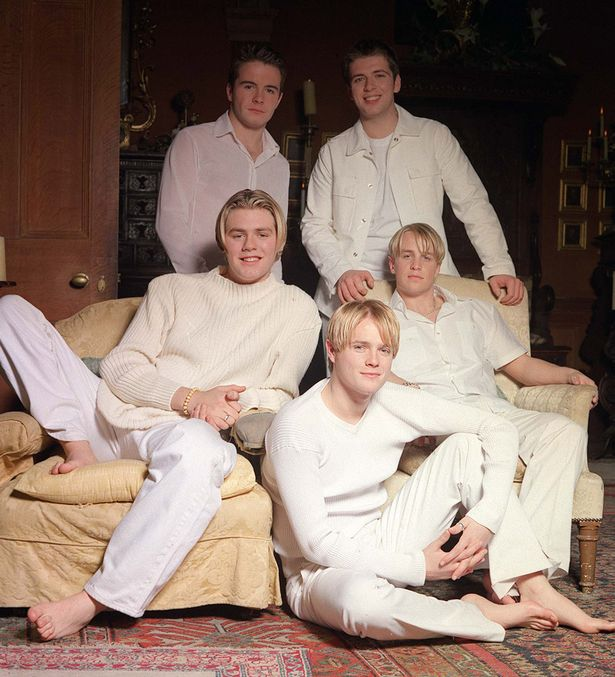
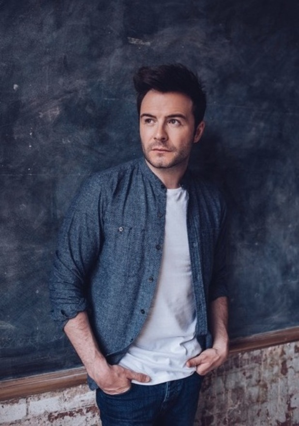
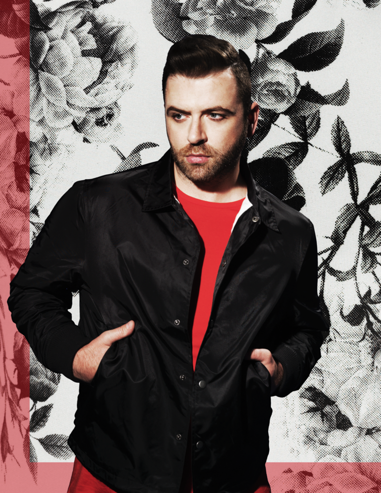
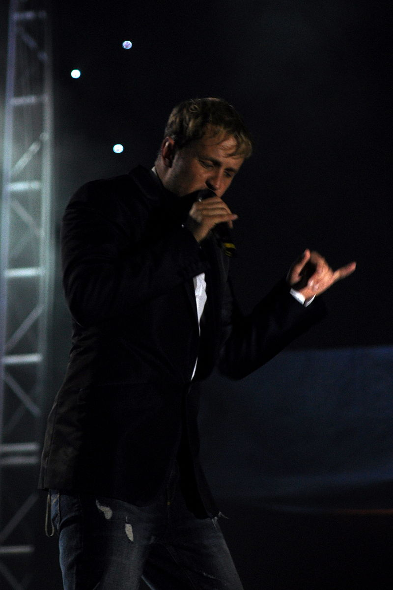
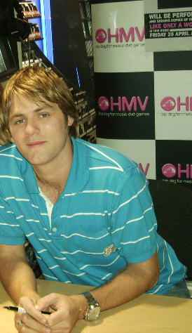

Westlife Boy Band 1998

Westlife are an Irish boy band group, formed in 1998 in Sligo, Ireland. They disbanded in 2012 and reunited in 2018. ... The group currently consists of Shane Filan, Markus Feehily, Kian Egan, and Nicky Byrne. They have a total of thirteen major album releases, twelve of which are studio albums.
Wikipedia
They have a total of thirteen major album releases, twelve of which are studio albums. Five albums are as a five-piece and eight are as a four-piece. The group rose to fame with their debut international self-titled studio album, Westlife (1999). It was followed by Coast to Coast (2000), World of Our Own (2001), Unbreakable – The Greatest Hits Vol. 1 (2002), and Turnaround (2003), which continued the group's success worldwide. Before the start of their Turnaround Tour in 2004, one of the original members, Brian McFadden, departed from the band. The four remaining members continued as a group to release their cover albums Allow Us to Be Frank (2004) and The Love Album (2006) and the studio albums Face to Face (2005) and Back Home (2007). After a hiatus of studio recording for almost one year in 2008, they regrouped and released the studio albums Where We Are (2009), and Gravity (2010), and the compilation album Greatest Hits (2011). After eight years, the quartet group released their eleventh studio album, Spectrum, in 2019.
View more
History
The new group, formed on 3 July 1998, was renamed Westside but that name was already in use by another band, so it was changed to Westlife. It was revealed that Walsh was already calling them Westlife before Westside name came along.[18] In Westlife – Our Story, Byrne revealed that, unlike the others in the group, he was keen to change the name to West High. McFadden also changed the spelling of his name to Bryan to make it easier to sign autographs. They managed to secure a major record deal the second time around under BMG with all other record labels competed. They have signed a four million pound record deal with RCA Records. Westlife's first big break came in 1998 when they opened for Boyzone and Backstreet Boys' concerts in Dublin. Boyzone singer Ronan Keating was brought in to co-manage the group with Walsh. Later, they won a special Smash Hits Roadshow award at that year's Smash Hits Poll Winners Party. Their first live television performance as a group in Ireland and worldwide was on the Irish TV series and the world's second longest-running late-night talk show, The Late Late Show that had its broadcast on 13 November 1998. They performed "Flying Without Wings".[19] The band then released an EP titled Swear It Again afterwards. Both recorded songs under Westside were produced by Steve Mac and written by Mac and Wayne Hector. The debut extended play and single was chosen by Cowell with the guidance of his father, Eric Cowell. His father stated then, "I think they will be big".[18]

Shane Steven Filan
(born 5 July 1979) is an Irish singer and songwriter. He is one of the two lead singers of boy band Westlife, which was formed in 1998, disbanded in 2012, and regrouped in 2018. Westlife have released thirteen albums, embarked on twelve world tours, and won several awards, becoming one of the most successful musical groups of all time.

Markus Michael Patrick Feehily
(born 28 May 1980) is an Irish singer and songwriter. He is one of the two lead singers of the vocal group Westlife. He is the youngest in the band.

Kian John Francis Kelly Egan
(born 29 April 1980, Sligo, Ireland) is a member of the Irish boyband, Westlife and coach on The Voice. He was ranked as Ireland's third sexiest man in 2014. ... Egan married actress/singer Jodi Albert (who is a singer of the girlband Wonderland) on 8 May 2009 in Barbados.

Nicholas Bernard James Adam McGarry Byrne, Jr.
(born 9 October 1978) is an Irish singer, songwriter, radio presenter, dancer, television presenter and former professional footballer, best known for being a member of Irish music band Westlife; he is the band's oldest member.

Brian McFadden
(born 12 April 1980) is an Irish singer, songwriter and television presenter who rose to fame in 1998 as a member of the Irish boy band Westlife. Following his departure from the group in 2004, McFadden released his debut solo album, Irish Son.
Song List
| A Fragile Heart |
Maria Anders |
Germany |
Change The World |
| Can't Lose What You Never Had |
Close Your Eyes |
Don't Get Me Wrong |
Bad Girls |
| Drive (for All Time) |
Fool Again |
Hey Whatever |
Come Fly With Me |
| I Cry |
I Have A Dream |
I Left My Heart In San Francisco |
Don't Let Me Go |
| If I Had Words |
If Tomorrow Never Comes |
Let's Make Tonight Special |
Evergreen |
| Love Takes Two |
Miss You Night |
My Private Movie |
Fly Me To The Moon |
| Nothing Is Impossible |
Open Your Heart |
Seasons In The Sun |
Forever |
| Story Of Love |
Swear It Again (rokstone Mix) |
That's What's It's All About |
Hey Whatever!! |
| Together Girl Forever |
Turn Around |
Walk Away |
I Did It For You |
| What I Want Is What I've Got |
When I Fall In Love |
You Make Me Feel |
If I Let You Go |
View all song